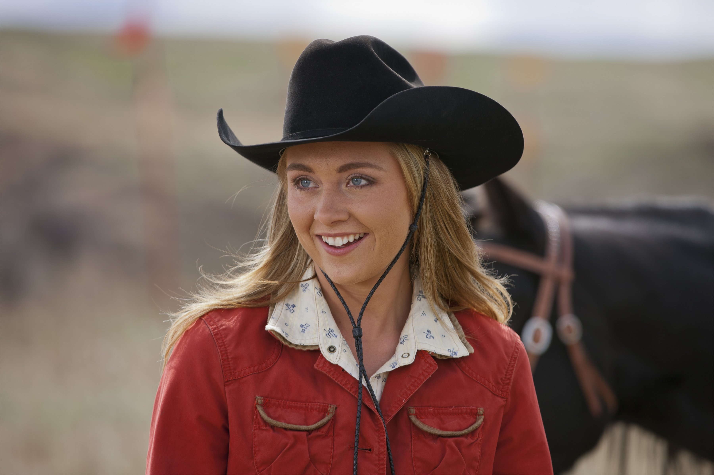

Amy Fleming
Amber Marshall
Ver más
Heartland es una historia sobre familia, amor y segundas oportunidades, ambientada en el corazón de Canadá. Desde su estreno en 2007, la serie ha conmovido a millones de espectadores con su mensaje de esperanza, trabajo en equipo y el vínculo único entre las personas y los caballos.
A lo largo de las temporadas, Amy y su familia enfrentan desafíos, pérdidas y nuevos comienzos, mostrando que incluso después de las tormentas, siempre hay espacio para sanar.
Descubrí más sobre HeartlandHeartland es una serie canadiense basada en las novelas de Lauren Brooke. Narra la vida en un rancho familiar donde los caballos son parte esencial de la historia y el vínculo entre generaciones.
La serie se filma en Alberta, con paisajes reales que le dan autenticidad.
Ver másHeartland está inspirada en una saga de novelas juveniles escritas por Lauren Brooke.
Ver másLos caballos usados en la serie reciben entrenamiento especial para cada escena.
Ver más